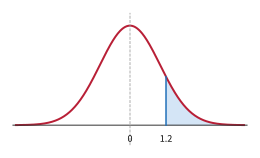
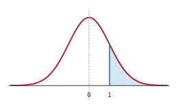
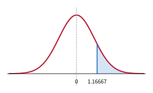

別冊練習問題 9 の解答 標本平均が基準以上になる確率
(1) 母平均 \(100\)、母標準偏差 \(15\) の母集団から大きさ \(36\) の無作為標本を抽出する。標本平均 \(\overline X\) が \(103\) 以上となる確率を求めよ。
標本平均の分布
\(E(\overline X)=100,\quad \sigma(\overline X)=\dfrac{15}{\sqrt{36}}=2.50\)。
標準化
\(Z=\dfrac{\overline X-100}{2.50}\)。\(\overline X\geqq103\) は \(Z\geqq 1.20\)。
確率

【答案】
\[0.1151\]答
(2) 母平均 \(70\)、母標準偏差 \(12\) の母集団から大きさ \(16\) の無作為標本を抽出する。標本平均 \(\overline X\) が \(73\) 以上となる確率を求めよ。
標本平均の分布
\(E(\overline X)=70,\quad \sigma(\overline X)=\dfrac{12}{\sqrt{16}}=3.00\)。
標準化
\(Z=\dfrac{\overline X-70}{3.00}\)。\(\overline X\geqq73\) は \(Z\geqq 1.00\)。
確率

【答案】
\[0.1587\]答
(3) 母平均 \(30\)、母標準偏差 \(6\) の母集団から大きさ \(49\) の無作為標本を抽出する。標本平均 \(\overline X\) が \(31\) 以上となる確率を求めよ。
標本平均の分布
\(E(\overline X)=30,\quad \sigma(\overline X)=\dfrac{6}{\sqrt{49}}=0.86\)。
標準化
\(Z=\dfrac{\overline X-30}{0.86}\)。\(\overline X\geqq31\) は \(Z\geqq 1.17\)。
確率

【答案】
\[0.1217\]答